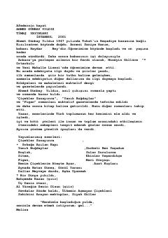

AHEfes'teki bir okul gezisinde geçen duygusal ve gerilim dolu bir romandır.
Ahmed Günbay Yıldız'ın bu romanı, Melisa ve Ozan'ın Efes gezisi sırasında yaşadıkları duygusal yakınlaşmayı ve arkalarından gelen İlkay'ın yarattığı gerilimli atmosferi konu alır. Eserde karakterlerin iç dünyaları, aşk, kıskançlık ve Türk toplumunun hassasiyetleri derinlemesine işlenmiştir.